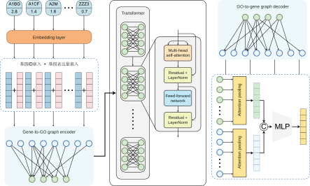
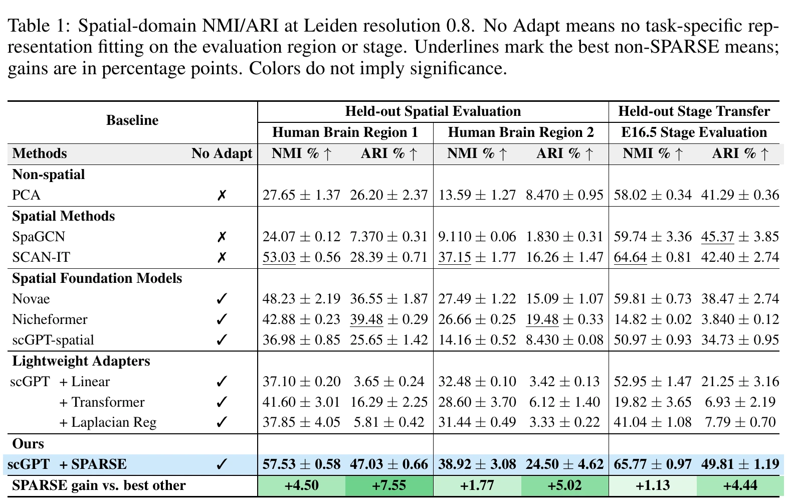
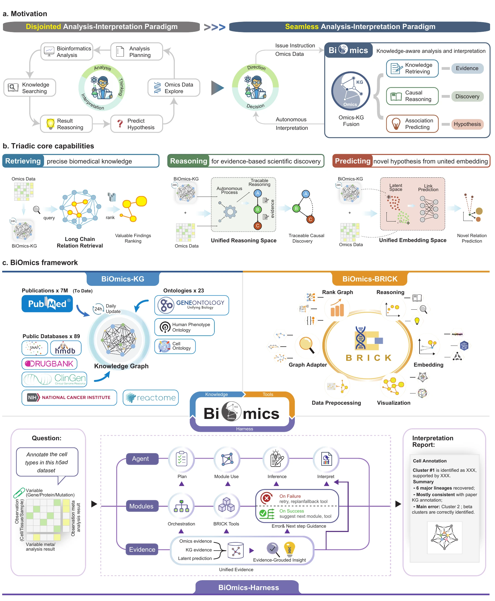
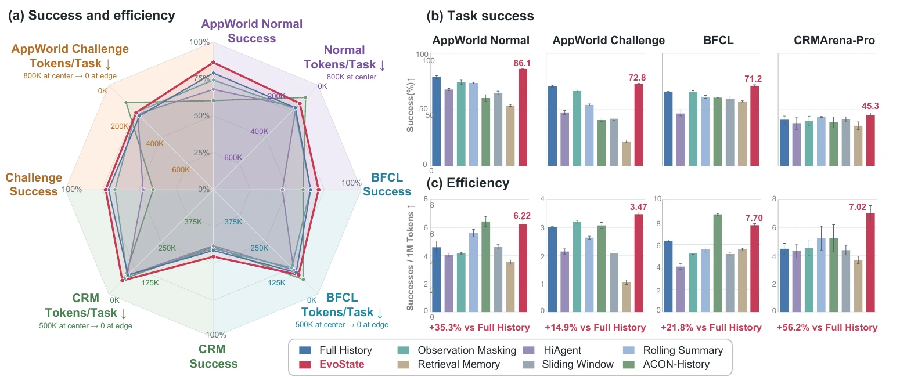

研究生
中国科学院大学 · 人工智能学院
研究生阶段系统学习人工智能方法，并在单细胞与多组学建模、机制推理和长程智能体研究中深化表征学习、知识利用与决策问题。围绕具体课题，持续训练从研究问题定义、方法设计到实验验证和论文写作的完整研究过程。
研究生阶段系统学习人工智能方法，并在单细胞与多组学建模、机制推理和长程智能体研究中深化表征学习、知识利用与决策问题。围绕具体课题，持续训练从研究问题定义、方法设计到实验验证和论文写作的完整研究过程。
本科阶段主要建立数理、编程与系统建模基础，学习从数据中刻画系统状态，并逐步接触控制、优化和反馈决策的方法。工程训练形成了将复杂问题拆解为模型、约束与可检验方案的习惯，也为后续跨领域研究打下基础。
研究生阶段的研究始于一个具体问题：相似的细胞表达谱处在不同的组织邻域，是否仍能用同一种方式理解？在OmniCell 中，负责基线模型构建、数据分析与评估，比较空间信息对细胞和组织层面任务的实际作用；随后为GOformer 设计细胞、基因与 GO 功能表示的读出和对照，区分预训练表征的质量与下游优化带来的增益。这些经历使关注点逐渐落到一个更基础的问题上：模型如何同时保留细胞的分子身份和所处的空间语境。在SPARSE 中，负责整体框架构思，将视觉模型中的多尺度思路转化为空间邻域建模方法，并完成下游任务的实验验证。
有了对当前状态的描述，下一步便是研究干预会如何改变它。在DynPerturb 中参与数据分析、模型评估和消融研究，检验干预的时间、强度与位置对细胞状态和调控关系的影响。对干预结果的分析又提出了新的要求：预测需要有可核查的机制依据。BiOmics 的主要贡献是整体研究框架设计，将知识关系、潜在表示和专业分析工具组织为可追溯的推理过程；在OncoEureka 中参与方法设计与分析，把竞争性肿瘤机制假设、预先确定的检验方案和来自不同数据的正反证据连起来，使初步发现能够转化为下一轮可执行的研究设计。
当研究对象扩展到持续行动的智能体，证据还需要随着任务推进而更新。参与EvoState 的研究构想和状态机制设计，区分当前执行记录、历史事件与现行要求，让新观察进入判断时不丢失关键约束。在北京大学法学院提出的LexStance 构想，则尝试把多方对话中分散的角色立场写成紧凑、可计算的状态，减少对原始对话的反复解读。进一步提出AEP-ECRG 的主动取证框架：当现有依据不足以支持行动时，比较继续调查的价值、成本与风险，并明确高影响行动所需的证据前提。
这些课题跨越生物系统与智能体，但始终在追问同一件事：判断依据如何形成，又如何在新观察出现后接受检验和修订。后续希望把状态表征、干预推演、机制核验与任务记忆放入连续的研究流程，使候选行动连同证据来源、适用条件和未解问题一起呈现，为关键判断保留审查与调整的空间。
在跨学科场景中，把研究问题转化为可执行的模型和智能体方案。
华大北京创新中心 · AI 算法研发
统一单细胞与空间转录组的基础模型
OmniCell 面向单细胞转录组缺少空间信息、空间转录组又常受分辨率限制的问题，在同一预训练框架中学习细胞内基因表达关系与细胞间空间依赖。模型通过输入序列显式组织相邻细胞，形成基因、细胞及组织拓扑的统一表示；论文在细胞类型结构、基因共表达、细胞类型解卷积与空间区域识别等任务上检验这些表示。
负责构建基线模型和评测流程，统一梳理单细胞与空间数据的任务设置、对照模型及评价指标；开展数据分析与模型评估，比较细胞类型、空间区域和解卷积任务中的表现，检查加入空间邻域后是否仍保留细胞与分子特征。参与统一建模思路讨论与论文结果组织。查看预印本 ↗
华大北京创新中心 · AI 算法研发
融合基因本体先验的单细胞基础模型
GOformer 将基因本体（GO）关系作为结构化先验引入单细胞转录组基础模型。基因身份与连续表达量在输入端融合，正向图编码器沿基因—GO 二分图把表达信息汇聚到功能节点；Transformer 建模 GO 节点之间的全局相互作用，再由逆向图解码器将功能信息传回基因表示。模型以掩码基因表达预测和细胞级对比学习联合预训练，并在细胞类型注释、基因表达插补与扰动响应预测等任务上评估。
围绕细胞、基因与 GO 功能三个层次的表征，负责下游读出与比较方案设计：将冻结表征的线性探针评估与任务模型微调后的性能分开分析，设计细胞向量、基因及 GO 表示汇总和注意力融合的对照与消融，并梳理任务设置、训练协议和结果解释。论文正在准备投稿。

北京大学法学院
多角色法律对话中的立场编码
在包含多名角色的法律场景中，各方对同一主张的支持、反对或保留态度可能散落在多轮自然语言对话里。智能体如果只保存原话，后续步骤就需要反复阅读并重新判断人物立场。LexStance 探索将对话压缩为机器可读的状态记录，明确表示说话者、所针对的主张及当前态度，让人物之间的关系与态度变化更容易追踪。
提出以“角色—主张—态度”记录多方立场的结构化方向，梳理多轮对话中立场含糊、态度变化及相互冲突等需要编码的情形。拟比较保存原始对话与维护结构化状态时的立场识别准确性和 token 开销；编码形式与验证方案仍在设计中。
状态表征 · 独立第一作者
Semantic-Preserving Adapter for Robust Spatial Embeddings
SPARSE 研究如何在不重训大型转录组主干的条件下，让已有细胞表示识别组织中的空间结构。方法在每个中心细胞周围建立多尺度邻域，通过特征引导的 token 合并、坐标传播、空间旋转位置编码、跨尺度注意力及自顶向下融合提取局部到区域的信息；掩码表达重建则约束空间适配过程，减少原有分子语义的流失。
在留出的两个人脑区域和 E16.5 胚胎阶段，Table 1 中空间域识别的 NMI 与 ARI 均取得所列方法中的最高点估计；论文还评估细胞类型区分、标签迁移和邻域组成预测。负责提出整体研究框架，将视觉模型中处理多尺度结构的思路转化为空间转录组的邻域建模方案，并围绕分子信息保留设计表达重建约束。完成空间域识别、细胞类型区分、标签迁移与邻域组成预测等下游实验，包括基线比较和消融分析，并整理图表与论文论证。


动态推演 · 共同作者
Dynamic Perturbation Modeling for Spatiotemporal Single-Cell Systems
DynPerturb 把干预的“何时、强度多大、作用于何处”放进统一的动态建模框架。模型以不同时点的细胞或基因为节点构建动态图，结合时间编码、空间邻接与带时间戳的记忆，跟踪扰动传播、调控边重连和细胞状态变化；连边预测与节点分类提供互补的分析视角。
论文以肾脏疾病、造血分化和心脏发育分析候选干预窗口、谱系变化及区域反馈。按照稿件列明的分工，参与数据分析与模型评估，核查动态关系预测及下游任务的表现；承担消融实验，整理比较结果并参与稿件准备、修改和第二轮返修。工作重点是检验模型对不同扰动设置的响应是否稳定、可解释。
机制解释 · 共同第一作者
A Foundational Bio-Reasoning Agent for Traceable and Mechanistic Multi-omics Discovery
BiOmics 试图弥合多组学分析结果与生物学机制解释之间的距离。框架将显式知识推理空间与潜在表示空间结合，由知识图谱提供实体与关系依据、模块化分析工具处理数据和候选、智能体规划检索及推理步骤，形成“检索—推理—预测”的研究流程。稿件涉及间接致病变异、细胞注释与药物重定位等任务，以检验跨尺度的机制解释能力。
以共同第一作者身份主要负责研究构想和整体框架设计：提出将可追溯的知识路径与潜在表示结合，规划 BiOmics-KG、BRICK 工具链和 Agent 的职责与数据流；设计从检索、分析到推理和预测的流程，以及保留证据来源、中间结果和待核查假设的原则。围绕间接致病变异、细胞注释和药物重定位，与团队讨论任务设置、对照口径及论文论证。稿件仍在共同修改。

循证肿瘤学 · 摘要作者
循证肿瘤学假设生成与迭代研究设计智能体
OncoEureka 面向肿瘤研究中临床观察、组学数据与既有证据分散的问题，将问题界定、竞争性机制假设、多来源检验和下一轮研究设计串成连续流程。方法先确定方向性预测、验证路径与分析计划，再检验具体候选，减少事后挑选解释的风险。提交的摘要以急性髓系白血病的维奈克拉敏感性和宫颈癌同期放化疗反应为例：前者比较发现队列、留出验证队列及外部数据中的药物反应线索；后者比较未折叠蛋白反应、缺氧与 EMT–CAF 等相互竞争的解释，并据此提出纵向、单细胞、空间和功能干预的后续验证方案。
作为摘要作者，参与方法设计与数据分析，重点梳理候选假设如何在分析前固定、不同来源的支持与反向结果如何比较，以及相关发现如何转化为可检验的研究问题。摘要已投递至 The Lancet Summit: Cancer Control in China ↗，目前待评审。
持续决策 · 共同第一作者
Multi-Operation Context-State Transitions for Long-Horizon LLM Agents
EvoState 研究长程智能体如何在压缩上下文时仍保留下一步行动必需的信息。框架把当前执行证据、历史事件结果和现行事实与要求分成 Current Trace、Event Memory、Task State；多操作编辑器依据新观察更新这些记录，依赖感知组装器则优先纳入精确编号、路径、未解决要求与行动依赖，即使它们超过柔性的 token 预算。
在 AppWorld、BFCL Long Context 和 CRMArena-Pro 子集的四组设置中，论文同时比较任务成功率与 token 开销。重点参与研究问题和三类状态的划分：明确执行中的精确引用、历史事件结果、最新事实与未完成要求应分别如何保留；参与多操作更新与依赖感知组装原则的设计，讨论过时事实失效和下一步行动所需信息的优先级，并参与评价框架、消融问题及论文论证。


主动取证 · 在研
面对证据稀缺、信息源可信度变化以及行动代价不对称的环境，AEP-ECRG 探索智能体应何时继续调查、优先获取什么证据、何时才进入处置。研究框架以公开观测、当前证据、信任状态和预算为输入，比较候选调查的价值与成本；高影响行动需要满足可追溯的证据前提和风险边界。
提出在证据不足时从被动回答转向主动取证的研究问题，主导观察、证据、信息源可信度与预算的状态划分；设计候选调查的价值、成本和风险比较，以及高影响行动需要满足的证据前提与人工复核节点。当前正推进场景与评价方式的具体化，框架效果仍待验证。